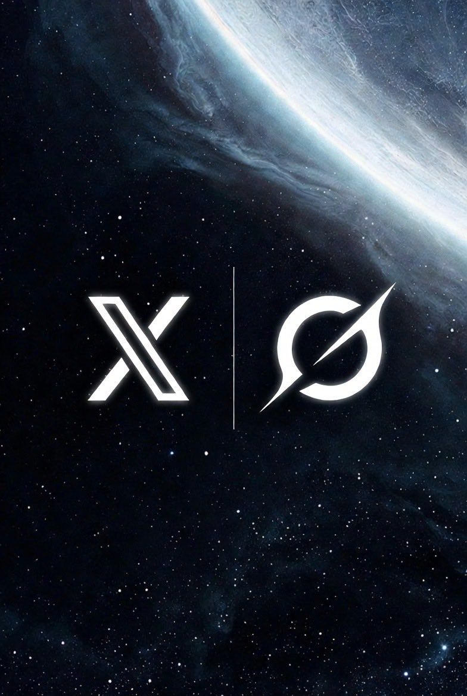

Chris Park 把 X API Pay-Per-Use Beta 放进公开路线图
Chris Park 在一条路线图式帖子里，把多个 X / xAI 方向放在一起对外展示，其中包括
X API Pay-Per-Use Beta。这说明 Karpathy 后面的回复不是无源之水，而是在回应一个已经被官方路线图公开抛出来的方向。更具体地说，这条路线图并不是只谈 API，而是把它和 Grok、XChat、XMoney、Feed 等核心产品放在一起。换句话说，API 在这里不是边角料，而是被当成平台未来能力的一部分。
这一步很关键，因为只有把源头帖找回来，后面的回复才不再像孤立吐槽，而会变成一个针对产品路线的工程化反馈。

Karpathy：方向没错，但只限于 Read，而且现在又贵又难喂给 agent
Karpathy 开头先给了一个明确肯定：这是一个好方向。但这个肯定有强限定，只对
Read endpoints成立，而不是自动扩展到Write。这本身就说明，在他眼里，读接口和写接口的 agent 风险结构根本不是一回事。随后他给出非常具体的使用反馈：自己两周前试着把这条路线接到一个项目里，结果大约 30 分钟的摸索就花掉了 200 美元。也就是说，问题不只是规模大以后贵，而是连探索期试错都已经高到足以劝退。
他还指出文档对 agent 极不友好：大量零散的短页面让 agent 难以 ingest。他反而希望看到一份或几份大的 intro Markdown 文档，并且能通过简单 curl 直接取到。
最后，他补了一个关键缺口：当前文档里似乎根本没有提到
XMCP。至少在 Search / Grok Assistant 的结果里是 0 提及。这说明问题不只是文档碎，而是 agent 真正需要的关键概念可能还没被稳定写进文档界面。
回复对象：Chris Park
@chrisparkX I think it's a good direction (for Read endpoints, not for Write)...
中文：这条本身就是对 Chris Park 的回复。它不是泛泛评论，而像是一个真正动手试过之后给出的产品反馈：方向可以，但当前的价格、文档和关键概念覆盖，还没有达到 agent 友好的程度。
目前已经能看清争点，但 XMCP 的完整链路还没补齐
把源头帖和回复放在一起后，这场讨论的主轴已经很清楚：官方在推进 X API Pay-Per-Use，而 Karpathy 认可方向，但认为它还没有被做成 agent-ready 的产品面。
不过，当前公开可抓到的这部分上下文里，还没有拿到 Chris Park 或官方文档一侧对
XMCP的完整解释链。也就是说，我们已经能看懂“争论焦点是什么”，但还不能把 XMCP 在这个事件里的具体角色讲到完全闭环。这类缺口不应该被 dossier 假装填满，而应该被明确写出来。只有这样，读者才知道：现在已经能完整理解到哪一层，下一层还差什么。
这场讨论真正围绕的三件事
事件 1 · 官方先把方向抛出来
Chris Park 在路线图帖里公开列出 X API Pay-Per-Use Beta，说明这不是边角料，而是 X / xAI 对外释放的正式方向之一。
事件 2 · Karpathy 认可方向，但只限于 Read
Karpathy 不是反对 API，而是明确区分：读取接口是好方向，写入接口不应被自动视作同级认可。
事件 3 · 真正的冲突点是 agent-ready 程度
价格过高、文档过碎、关键概念缺失，使这套 API 还停留在“理论可接入”而不是“工作流可接入”的阶段。
一句话总结：这场讨论真正讲的不是“X API 好不好”，而是：方向本身可以，但如果要让 agent 真正接入，价格、文档组织和读写边界都还得重做。